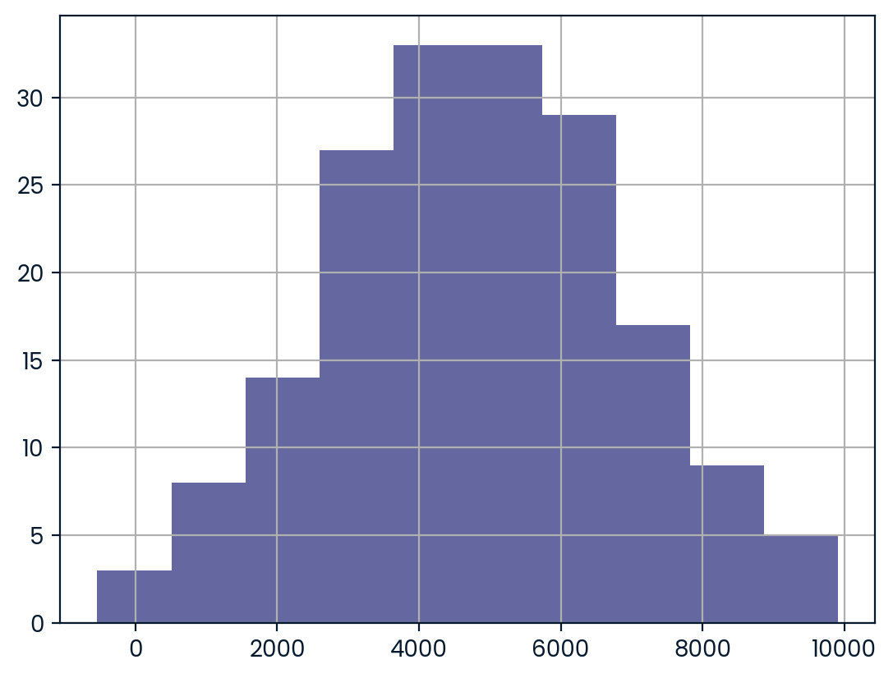
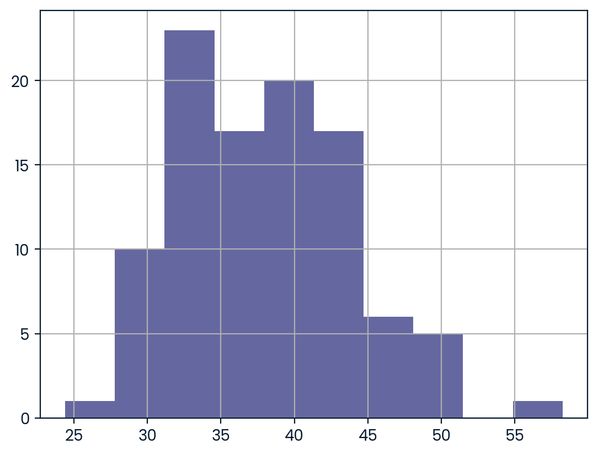

Introduction to Statistics in Python
# Importing numpy and pandas
import numpy as np
import pandas as pd
# Importing the course datasets
amir_deals = pd.read_csv("datasets/amir_deals.csv")
world_happiness = pd.read_csv("datasets/world_happiness.csv")
food_consumption = pd.read_csv("datasets/food_consumption.csv")Chapter 1: Summary Statistics
Summary statistics gives you the tools you need to boil down massive datasets to reveal the highlights. In this chapter, you’ll explore summary statistics including mean, median, and standard deviation, and learn how to accurately interpret them. You’ll also develop your critical thinking skills, allowing you to choose the best summary statistics for your data.
Mean and median
In this chapter, you’ll be working with the 2018 Food Carbon Footprint Index from nu3. The food_consumption dataset contains information about the kilograms of food consumed per person per year in each country in each food category (consumption) as well as information about the carbon footprint of that food category (co2_emissions) measured in kilograms of carbon dioxide, or CO2, per person per year in each country.
In this exercise, you’ll compute measures of center to compare food consumption in the US and Belgium using your pandas and numpy skills.
pandas is imported as pd for you and food_consumption is pre-loaded. ### Instructions - Import numpy with the alias np. - Create two DataFrames: one that holds the rows of food_consumption for ‘Belgium’ and another that holds rows for ‘USA’. Call these be_consumption and usa_consumption. - Calculate the mean and median of kilograms of food consumed per person per year for both countries. - Subset food_consumption for rows with data about Belgium and the USA. - Group the subsetted data by country and select only the consumption column. - Calculate the mean and median of the kilograms of food consumed per person per year in each country using .agg().
# Import numpy with alias np
import numpy as np
# Filter for Belgium
be_consumption = food_consumption[food_consumption.country=="Belgium"]
# Filter for USA
usa_consumption = food_consumption[food_consumption.country=="USA"]
# Calculate mean and median consumption in Belgium
print(be_consumption["consumption"].mean())
print(be_consumption["consumption"].median)
# Calculate mean and median consumption in USA
print(usa_consumption.consumption.mean())
print(usa_consumption.consumption.median)42.13272727272727
<bound method NDFrame._add_numeric_operations.<locals>.median of 396 38.65
397 12.20
398 15.63
399 1.32
400 18.97
401 12.59
402 236.19
403 111.91
404 8.61
405 0.07
406 7.32
Name: consumption, dtype: float64>
44.650000000000006
<bound method NDFrame._add_numeric_operations.<locals>.median of 55 27.64
56 50.01
57 36.24
58 0.43
59 12.35
60 14.58
61 254.69
62 80.43
63 6.88
64 0.04
65 7.86
Name: consumption, dtype: float64>Mean vs. median
In the video, you learned that the mean is the sum of all the data points divided by the total number of data points, and the median is the middle value of the dataset where 50% of the data is less than the median, and 50% of the data is greater than the median. In this exercise, you’ll compare these two measures of center.
pandas is loaded as pd, numpy is loaded as np, and food_consumption is available. ### Instructions - Import matplotlib.pyplot with the alias plt. - Subset food_consumption to get the rows where food_category is ‘rice’. - Create a histogram of co2_emission for rice and show the plot.
# Import matplotlib.pyplot with alias plt
import matplotlib.pyplot as plt
# Subset for food_category equals rice
rice_consumption = food_consumption[food_consumption.food_category=='rice']
# Histogram of co2_emission for rice and show plot
#rice_consumption.plot(x='consumption', y = 'co2_emission',kind='bar')
plt.hist(rice_consumption["co2_emission"])
plt.show()- Use .agg() to calculate the mean and median of co2_emission for rice.
# Subset for food_category equals rice
rice_consumption = food_consumption[food_consumption['food_category'] == 'rice']
# Calculate mean and median of co2_emission with .agg()
print(rice_consumption.co2_emission.agg(["mean","median"]))mean 37.591615
median 15.200000
Name: co2_emission, dtype: float64Quartiles, quantiles, and quintiles
Quantiles are a great way of summarizing numerical data since they can be used to measure center and spread, as well as to get a sense of where a data point stands in relation to the rest of the data set. For example, you might want to give a discount to the 10% most active users on a website.
In this exercise, you’ll calculate quartiles, quintiles, and deciles, which split up a dataset into 4, 5, and 10 pieces, respectively.
Both pandas as pd and numpy as np are loaded and food_consumption is available. ### Instructions - Calculate the quartiles of the co2_emission column of food_consumption. - Calculate the six quantiles that split up the data into 5 pieces (quintiles) of the co2_emission column of food_consumption. - Calculate the eleven quantiles of co2_emission that split up the data into ten pieces (deciles).
# Calculate the quartiles of co2_emission
print(np.quantile(food_consumption.co2_emission,[0,0.25,0.5,0.75,1]))[ 0. 5.21 16.53 62.5975 1712. ]# Calculate the quintiles of co2_emission
print(np.quantile(food_consumption.co2_emission, np.linspace(0,1,6)))[ 0. 3.54 11.026 25.59 99.978 1712. ]# Calculate the deciles of co2_emission
print(np.quantile(food_consumption.co2_emission,np.linspace(0,1,11)))[0.00000e+00 6.68000e-01 3.54000e+00 7.04000e+00 1.10260e+01 1.65300e+01
2.55900e+01 4.42710e+01 9.99780e+01 2.03629e+02 1.71200e+03]Variance and standard deviation
Variance and standard deviation are two of the most common ways to measure the spread of a variable, and you’ll practice calculating these in this exercise. Spread is important since it can help inform expectations. For example, if a salesperson sells a mean of 20 products a day, but has a standard deviation of 10 products, there will probably be days where they sell 40 products, but also days where they only sell one or two. Information like this is important, especially when making predictions.
Both pandas as pd and numpy as np are loaded, and food_consumption is available. ### Instructions - Calculate the variance and standard deviation of co2_emission for each food_category by grouping and aggregating. - Import matplotlib.pyplot with alias plt. - Create a histogram of co2_emission for the beef food_category and show the plot. - Create a histogram of co2_emission for the eggs food_category and show the plot.
# Print variance and sd of co2_emission for each food_category
print(food_consumption.groupby('food_category')['co2_emission'].agg(['var','std']))
# Import matplotlib.pyplot with alias plt
import matplotlib.pyplot as plt
# Create histogram of co2_emission for food_category 'beef'
plt.hist(food_consumption[food_consumption.food_category=='beef'].co2_emission)
# Show plot
plt.show()
# Create histogram of co2_emission for food_category 'eggs'
plt.hist(food_consumption[food_consumption.food_category=='eggs'].co2_emission)
# Show plot
plt.show() var std
food_category
beef 88748.408132 297.906710
dairy 17671.891985 132.935669
eggs 21.371819 4.622966
fish 921.637349 30.358481
lamb_goat 16475.518363 128.356996
nuts 35.639652 5.969895
pork 3094.963537 55.632396
poultry 245.026801 15.653332
rice 2281.376243 47.763754
soybeans 0.879882 0.938020
wheat 71.023937 8.427570Finding outliers using IQR
Outliers can have big effects on statistics like mean, as well as statistics that rely on the mean, such as variance and standard deviation. Interquartile range, or IQR, is another way of measuring spread that’s less influenced by outliers. IQR is also often used to find outliers. If a value is less than Q1-1.5 x IQR or greater than Q1 + 1.5 x IQR, it’s considered an outlier. In fact, this is how the lengths of the whiskers in a matplotlib box plot are calculated.
In this exercise, you’ll calculate IQR and use it to find some outliers. pandas as pd and numpy as np are loaded and food_consumption is available.
Instructions
- Calculate the total co2_emission per country by grouping by country and taking the sum of co2_emission. Store the resulting DataFrame as emissions_by_country.
# Calculate total co2_emission per country: emissions_by_country
emissions_by_country = food_consumption.groupby("country").agg({"co2_emission":"sum"})
print(emissions_by_country)
emissions_by_country = food_consumption.groupby("country")["co2_emission"].sum()
print(emissions_by_country) co2_emission
country
Albania 1777.85
Algeria 707.88
Angola 412.99
Argentina 2172.40
Armenia 1109.93
... ...
Uruguay 1634.91
Venezuela 1104.10
Vietnam 641.51
Zambia 225.30
Zimbabwe 350.33
[130 rows x 1 columns]
country
Albania 1777.85
Algeria 707.88
Angola 412.99
Argentina 2172.40
Armenia 1109.93
...
Uruguay 1634.91
Venezuela 1104.10
Vietnam 641.51
Zambia 225.30
Zimbabwe 350.33
Name: co2_emission, Length: 130, dtype: float64- Compute the first and third quartiles of emissions_by_country and store these as q1 and q3.
- Calculate the interquartile range of emissions_by_country and store it as iqr.
# Calculate total co2_emission per country: emissions_by_country
emissions_by_country = food_consumption.groupby('country')['co2_emission'].sum()
# Compute the first and third quartiles and IQR of emissions_by_country
q1 = np.quantile(emissions_by_country,0.25)
q3 = np.quantile(emissions_by_country,0.75)
iqr = q3-q1- Calculate the lower and upper cutoffs for outliers of emissions_by_country, and store these as lower and upper.
# Calculate total co2_emission per country: emissions_by_country
emissions_by_country = food_consumption.groupby('country')['co2_emission'].sum()
# Compute the first and third quantiles and IQR of emissions_by_country
q1 = np.quantile(emissions_by_country, 0.25)
q3 = np.quantile(emissions_by_country, 0.75)
iqr = q3 - q1
# Calculate the lower and upper cutoffs for outliers
lower = q1 - 1.5*iqr
upper = q3 + 1.5*iqr- Subset emissions_by_country to get countries with a total emission greater than the upper cutoff or a total emission less than the lower cutoff.
# Calculate total co2_emission per country: emissions_by_country
emissions_by_country = food_consumption.groupby('country')['co2_emission'].sum()
# Compute the first and third quantiles and IQR of emissions_by_country
q1 = np.quantile(emissions_by_country, 0.25)
q3 = np.quantile(emissions_by_country, 0.75)
iqr = q3 - q1
# Calculate the lower and upper cutoffs for outliers
lower = q1 - 1.5 * iqr
upper = q3 + 1.5 * iqr
# Subset emissions_by_country to find outliers
outliers = emissions_by_country[(emissions_by_country<lower) | (emissions_by_country>upper)]
print(outliers)country
Argentina 2172.4
Name: co2_emission, dtype: float64Chapter 2: Random Numbers and Probability
In this chapter, you’ll learn how to generate random samples and measure chance using probability. You’ll work with real-world sales data to calculate the probability of a salesperson being successful. Finally, you’ll use the binomial distribution to model events with binary outcomes.
Calculating probabilities
You’re in charge of the sales team, and it’s time for performance reviews, starting with Amir. As part of the review, you want to randomly select a few of the deals that he’s worked on over the past year so that you can look at them more deeply. Before you start selecting deals, you’ll first figure out what the chances are of selecting certain deals.
Instructions
- Count the number of deals Amir worked on for each product type and store in counts.
- Calculate the probability of selecting a deal for the different product types by dividing the counts by the total number of deals Amir worked on. Save this as probs.
# Count the deals for each product
counts = amir_deals['product'].value_counts()
print(counts)Product B 62
Product D 40
Product A 23
Product C 15
Product F 11
Product H 8
Product I 7
Product E 5
Product N 3
Product G 2
Product J 2
Name: product, dtype: int64# Count the deals for each product
counts = amir_deals['product'].value_counts()
# Calculate probability of picking a deal with each product
probs = counts/np.sum(counts)
print(probs)Product B 0.348315
Product D 0.224719
Product A 0.129213
Product C 0.084270
Product F 0.061798
Product H 0.044944
Product I 0.039326
Product E 0.028090
Product N 0.016854
Product G 0.011236
Product J 0.011236
Name: product, dtype: float64Sampling deals
In the previous exercise, you counted the deals Amir worked on. Now it’s time to randomly pick five deals so that you can reach out to each customer and ask if they were satisfied with the service they received. You’ll try doing this both with and without replacement.
Additionally, you want to make sure this is done randomly and that it can be reproduced in case you get asked how you chose the deals, so you’ll need to set the random seed before sampling from the deals.
Both pandas as pd and numpy as np are loaded and amir_deals is available. ### Instructions - Set the random seed to 24. - Take a sample of 5 deals without replacement and store them as sample_without_replacement. - Take a sample of 5 deals with replacement and save as sample_with_replacement.
# Set random seed
np.random.seed(24)
# Sample 5 deals without replacement
sample_without_replacement = amir_deals.sample(5, replace=False)
print(sample_without_replacement) Unnamed: 0 product client status amount num_users
127 128 Product B Current Won 2070.25 7
148 149 Product D Current Won 3485.48 52
77 78 Product B Current Won 6252.30 27
104 105 Product D Current Won 4110.98 39
166 167 Product C New Lost 3779.86 11# Set random seed
np.random.seed(24)
# Sample 5 deals with replacement
sample_with_replacement = amir_deals.sample(5,replace=True)
print(sample_with_replacement) Unnamed: 0 product client status amount num_users
162 163 Product D Current Won 6755.66 59
131 132 Product B Current Won 6872.29 25
87 88 Product C Current Won 3579.63 3
145 146 Product A Current Won 4682.94 63
145 146 Product A Current Won 4682.94 63Creating a probability distribution
A new restaurant opened a few months ago, and the restaurant’s management wants to optimize its seating space based on the size of the groups that come most often. On one night, there are 10 groups of people waiting to be seated at the restaurant, but instead of being called in the order they arrived, they will be called randomly. In this exercise, you’ll investigate the probability of groups of different sizes getting picked first. Data on each of the ten groups is contained in the restaurant_groups DataFrame.
Remember that expected value can be calculated by multiplying each possible outcome with its corresponding probability and taking the sum. The restaurant_groups data is available. pandas is loaded as pd, numpy is loaded as np, and matplotlib.pyplot is loaded as plt. ### Instructions - Create a histogram of the group_size column of restaurant_groups, setting bins to [2, 3, 4, 5, 6]. Remember to show the plot. - Count the number of each group_size in restaurant_groups, then divide by the number of rows in restaurant_groups to calculate the probability of randomly selecting a group of each size. Save as size_dist. - Reset the index of size_dist. - Rename the columns of size_dist to group_size and prob. - Calculate the expected value of the size_dist, which represents the expected group size, by multiplying the group_size by the prob and taking the sum. - Calculate the probability of randomly picking a group of 4 or more people by subsetting for groups of size 4 or more and summing the probabilities of selecting those groups.
restaurant_groups = pd.read_csv("datasets/resturant_groups.csv")
restaurant_groups| group_id | group_size | |
|---|---|---|
| 0 | A | 2 |
| 1 | B | 4 |
| 2 | C | 6 |
| 3 | D | 2 |
| 4 | E | 2 |
| 5 | F | 2 |
| 6 | G | 3 |
| 7 | H | 2 |
| 8 | I | 4 |
| 9 | J | 2 |
# Create a histogram of restaurant_groups and show plot
restaurant_groups['group_size'].hist(bins=[2,3,4,5,6])
plt.show()# Create probability distribution
size_dist = restaurant_groups["group_size"] / restaurant_groups.shape[0]
# Reset index and rename columns
size_dist = size_dist.reset_index()
size_dist.columns = ["group_size", "prob"]
print(size_dist) group_size prob
0 0 0.2
1 1 0.4
2 2 0.6
3 3 0.2
4 4 0.2
5 5 0.2
6 6 0.3
7 7 0.2
8 8 0.4
9 9 0.2# Create probability distribution
size_dist = restaurant_groups['group_size'].value_counts() / restaurant_groups.shape[0]
# Reset index and rename columns
size_dist = size_dist.reset_index()
size_dist.columns = ['group_size', 'prob']
# Calculate expected value
expected_value = np.sum(size_dist.group_size*size_dist.prob)
print(expected_value)2.9000000000000004# Create probability distribution
size_dist = restaurant_groups['group_size'].value_counts() / restaurant_groups.shape[0]
# Reset index and rename columns
size_dist = size_dist.reset_index()
size_dist.columns = ['group_size', 'prob']
# Expected value
expected_value = np.sum(size_dist['group_size'] * size_dist['prob'])
# Subset groups of size 4 or more
groups_4_or_more = size_dist[size_dist.group_size>=4]
# Sum the probabilities of groups_4_or_more
prob_4_or_more = groups_4_or_more.prob.sum()
print(prob_4_or_more)0.30000000000000004Data back-ups
The sales software used at your company is set to automatically back itself up, but no one knows exactly what time the back-ups happen. It is known, however, that back-ups happen exactly every 30 minutes. Amir comes back from sales meetings at random times to update the data on the client he just met with. He wants to know how long he’ll have to wait for his newly-entered data to get backed up. Use your new knowledge of continuous uniform distributions to model this situation and answer Amir’s questions.
Instructions
- To model how long Amir will wait for a back-up using a continuous uniform distribution, save his lowest possible wait time as min_time and his longest possible wait time as max_time. Remember that back-ups happen every 30 minutes.
- Import uniform from scipy.stats and calculate the probability that Amir has to wait less than 5 minutes, and store in a variable called prob_less_than_5.
- Calculate the probability that Amir has to wait more than 5 minutes, and store in a variable called prob_greater_than_5.
- Calculate the probability that Amir has to wait between 10 and 20 minutes, and store in a variable called prob_between_10_and_20.
# Min and max wait times for back-up that happens every 30 min
min_time = 0
max_time = 30# Min and max wait times for back-up that happens every 30 min
min_time = 0
max_time = 30
# Import uniform from scipy.stats
from scipy.stats import uniform
# Calculate probability of waiting less than 5 mins
prob_less_than_5 = uniform.cdf(5,min_time,max_time)
print(prob_less_than_5)0.16666666666666666# Min and max wait times for back-up that happens every 30 min
min_time = 0
max_time = 30
# Import uniform from scipy.stats
from scipy.stats import uniform
# Calculate probability of waiting more than 5 mins
prob_greater_than_5 = 1-uniform.cdf(5,min_time,max_time)
print(prob_greater_than_5)0.8333333333333334# Min and max wait times for back-up that happens every 30 min
min_time = 0
max_time = 30
# Import uniform from scipy.stats
from scipy.stats import uniform
# Calculate probability of waiting 10-20 mins
prob_between_10_and_20 = uniform.cdf(20,min_time,max_time) - uniform.cdf(10,min_time,max_time)
print(prob_between_10_and_20)0.3333333333333333Simulating wait times
To give Amir a better idea of how long he’ll have to wait, you’ll simulate Amir waiting 1000 times and create a histogram to show him what he should expect. Recall from the last exercise that his minimum wait time is 0 minutes and his maximum wait time is 30 minutes.
As usual, pandas as pd, numpy as np, and matplotlib.pyplot as plt are loaded. ### Instructions - Set the random seed to 334. - Import uniform from scipy.stats. - Generate 1000 wait times from the continuous uniform distribution that models Amir’s wait time. Save this as wait_times. - Create a histogram of the simulated wait times and show the plot.
# Set random seed to 334
np.random.seed(334)
# Import uniform
from scipy.stats import uniform
# Generate 1000 wait times between 0 and 30 mins
wait_times = uniform.rvs(0, 30, size=1000)
# Create a histogram of simulated times and show plot
plt.hist(wait_times,bins=10)
plt.show()Simulating sales deals
Assume that Amir usually works on 3 deals per week, and overall, he wins 30% of deals he works on. Each deal has a binary outcome: it’s either lost, or won, so you can model his sales deals with a binomial distribution. In this exercise, you’ll help Amir simulate a year’s worth of his deals so he can better understand his performance.
numpy is imported as np. ### Instructions - Import binom from scipy.stats and set the random seed to 10. - Simulate 1 deal worked on by Amir, who wins 30% of the deals he works on. - Simulate a typical week of Amir’s deals, or one week of 3 deals. - Simulate a year’s worth of Amir’s deals, or 52 weeks of 3 deals each, and store in deals. - Print the mean number of deals he won per week.
# Import binom from scipy.stats
from scipy.stats import binom
# Set random seed to 10
np.random.seed(10)
# Simulate a single deal
print(binom.rvs(1, .3, size=1))[1]# Import binom from scipy.stats
from scipy.stats import binom
# Set random seed to 10
np.random.seed(10)
# Simulate 1 week of 3 deals
print(binom.rvs(3,.3,size=1))[1]# Import binom from scipy.stats
from scipy.stats import binom
# Set random seed to 10
np.random.seed(10)
# Simulate 52 weeks of 3 deals
deals = binom.rvs(3,.3,size=52)
# Print mean deals won per week
print(np.mean(deals))0.8269230769230769Calculating binomial probabilities
Just as in the last exercise, assume that Amir wins 30% of deals. He wants to get an idea of how likely he is to close a certain number of deals each week. In this exercise, you’ll calculate what the chances are of him closing different numbers of deals using the binomial distribution.
binom is imported from scipy.stats. ### Instructions - What’s the probability that Amir closes all 3 deals in a week? Save this as prob_3. - What’s the probability that Amir closes 1 or fewer deals in a week? Save this as prob_less_than_or_equal_1. - What’s the probability that Amir closes more than 1 deal? Save this as prob_greater_than_1.
# Probability of closing 3 out of 3 deals
prob_3 = binom.pmf(3,3,0.3)
print(prob_3)0.026999999999999996# Probability of closing <= 1 deal out of 3 deals
prob_less_than_or_equal_1 = binom.cdf(1,3,.3)
print(prob_less_than_or_equal_1)0.784# Probability of closing > 1 deal out of 3 deals
prob_greater_than_1 = 1-binom.cdf(1,3,.3)
print(prob_greater_than_1)0.21599999999999997How many sales will be won?
Now Amir wants to know how many deals he can expect to close each week if his win rate changes. Luckily, you can use your binomial distribution knowledge to help him calculate the expected value in different situations. Recall from the video that the expected value of a binomial distribution can be calculated by nxp
Instructions
- Calculate the expected number of sales out of the 3 he works on that Amir will win each week if he maintains his 30% win rate.
- Calculate the expected number of sales out of the 3 he works on that he’ll win if his win rate drops to 25%.
- Calculate the expected number of sales out of the 3 he works on that he’ll win if his win rate rises to 35%.
# Expected number won with 30% win rate
won_30pct = 3 * .3
print(won_30pct)
# Expected number won with 25% win rate
won_25pct = 3*.25
print(won_25pct)
# Expected number won with 35% win rate
won_35pct = 3*.35
print(won_35pct)0.8999999999999999
0.75
1.0499999999999998Chapter 3: More Distributions and the Central Limit Theorem
It’s time to explore one of the most important probability distributions in statistics, normal distribution. You’ll create histograms to plot normal distributions and gain an understanding of the central limit theorem, before expanding your knowledge of statistical functions by adding the Poisson, exponential, and t-distributions to your repertoire.
Distribution of Amir’s sales
Since each deal Amir worked on (both won and lost) was different, each was worth a different amount of money. These values are stored in the amount column of amir_deals As part of Amir’s performance review, you want to be able to estimate the probability of him selling different amounts, but before you can do this, you’ll need to determine what kind of distribution the amount variable follows.
Instructions
- Create a histogram with 10 bins to visualize the distribution of the amount. Show the plot.
# Histogram of amount with 10 bins and show plot
amir_deals["amount"].hist(bins=10)
plt.show()
Probabilities from the normal distribution
Since each deal Amir worked on (both won and lost) was different, each was worth a different amount of money. These values are stored in the amount column of amir_deals and follow a normal distribution with a mean of 5000 dollars and a standard deviation of 2000 dollars. As part of his performance metrics, you want to calculate the probability of Amir closing a deal worth various amounts.
Instructions
- What’s the probability of Amir closing a deal worth less than $7500?
- What’s the probability of Amir closing a deal worth more than $1000?
- What’s the probability of Amir closing a deal worth between $3000 and $7000?
- What amount will 25% of Amir’s sales be less than?
from scipy.stats import norm
# Probability of deal < 7500
prob_less_7500 = norm.cdf(7500, 5000, 2000)
print(prob_less_7500)0.8943502263331446# Probability of deal > 1000
prob_over_1000 = 1- norm.cdf(1000,5000,2000)
print(prob_over_1000)0.9772498680518208# Probability of deal between 3000 and 7000
prob_3000_to_7000 = norm.cdf(7000,5000,2000) - norm.cdf(3000,5000,2000)
print(prob_3000_to_7000)0.6826894921370859# Calculate amount that 25% of deals will be less than
pct_25 = norm.ppf(.25,5000,2000)
print(pct_25)3651.0204996078364Simulating sales under new market conditions
The company’s financial analyst is predicting that next quarter, the worth of each sale will increase by 20% and the volatility, or standard deviation, of each sale’s worth will increase by 30%. To see what Amir’s sales might look like next quarter under these new market conditions, you’ll simulate new sales amounts using the normal distribution and store these in the new_sales DataFrame, which has already been created for you.
In addition, norm from scipy.stats, pandas as pd, and matplotlib.pyplot as plt are loaded. ### Instructions - Currently, Amir’s average sale amount is $5000. Calculate what his new average amount will be if it increases by 20% and store this in new_mean. - Amir’s current standard deviation is $2000. Calculate what his new standard deviation will be if it increases by 30% and store this in new_sd. - Create a variable called new_sales, which contains 36 simulated amounts from a normal distribution with a mean of new_mean and a standard deviation of new_sd. - Plot the distribution of the new_sales amounts using a histogram and show the plot.
# Calculate new average amount
new_mean = 5000*1.2
# Calculate new standard deviation
new_sd = 2000*1.3
# Simulate 36 new sales
new_sales = norm.rvs(new_mean,new_sd,size=36)
# Create histogram and show
plt.hist(new_sales,bins=10)
plt.show()The CLT in action
The central limit theorem states that a sampling distribution of a sample statistic approaches the normal distribution as you take more samples, no matter the original distribution being sampled from.
In this exercise, you’ll focus on the sample mean and see the central limit theorem in action while examining the num_users column of amir_deals more closely, which contains the number of people who intend to use the product Amir is selling.
Instructions
- Create a histogram of the num_users column of amir_deals and show the plot.
# Create a histogram of num_users and show
amir_deals['num_users'].hist(bins=10)
plt.show()- Set the seed to 104.
- Take a sample of size 20 with replacement from the num_users column of amir_deals, and take the mean.
# Set seed to 104
np.random.seed(104)
# Sample 20 num_users with replacement from amir_deals
samp_20 = amir_deals['num_users'].sample(20, replace=True)
# Take mean of samp_20
print(np.mean(samp_20))32.0- Repeat this 100 times using a for loop and store as sample_means. This will take 100 different samples and calculate the mean of each.
# Set seed to 104
np.random.seed(104)
# Sample 20 num_users with replacement from amir_deals and take mean
samp_20 = amir_deals['num_users'].sample(20, replace=True)
np.mean(samp_20)
sample_means = []
# Loop 100 times
for i in range(100):
# Take sample of 20 num_users
samp_20 = amir_deals['num_users'].sample(20, replace=True)
# Calculate mean of samp_20
samp_20_mean = np.mean(samp_20)
# Append samp_20_mean to sample_means
sample_means.append(samp_20_mean)
print(sample_means)[31.35, 45.05, 33.55, 38.15, 50.85, 31.85, 34.65, 36.25, 38.9, 44.05, 35.45, 37.6, 37.95, 28.85, 33.3, 31.65, 45.5, 43.2, 24.4, 41.05, 37.2, 39.3, 29.45, 33.55, 45.3, 45.1, 30.95, 36.25, 37.65, 42.55, 34.55, 41.1, 36.9, 42.45, 38.45, 45.9, 42.7, 38.4, 32.55, 30.25, 38.0, 38.75, 49.3, 39.55, 49.05, 42.05, 41.0, 40.6, 58.25, 34.55, 51.2, 34.15, 36.95, 42.45, 41.85, 33.2, 36.15, 37.55, 34.2, 29.75, 42.35, 43.75, 29.0, 32.05, 31.65, 44.6, 30.85, 29.6, 37.7, 33.1, 36.35, 40.65, 45.7, 33.8, 40.1, 39.9, 33.5, 32.65, 32.85, 42.85, 35.4, 31.7, 32.0, 33.85, 36.6, 44.35, 39.9, 37.0, 37.3, 42.5, 38.35, 42.8, 44.55, 30.3, 50.45, 42.35, 40.65, 29.85, 39.3, 33.1]- Convert sample_means into a pd.Series, create a histogram of the sample_means, and show the plot.
# Set seed to 104
np.random.seed(104)
sample_means = []
# Loop 100 times
for i in range(100):
# Take sample of 20 num_users
samp_20 = amir_deals['num_users'].sample(20, replace=True)
# Calculate mean of samp_20
samp_20_mean = np.mean(samp_20)
# Append samp_20_mean to sample_means
sample_means.append(samp_20_mean)
# Convert to Series and plot histogram
sample_means_series = pd.Series(sample_means)
sample_means_series.hist(bins=10)
# Show plot
plt.show()
The mean of means
You want to know what the average number of users (num_users) is per deal, but you want to know this number for the entire company so that you can see if Amir’s deals have more or fewer users than the company’s average deal. The problem is that over the past year, the company has worked on more than ten thousand deals, so it’s not realistic to compile all the data. Instead, you’ll estimate the mean by taking several random samples of deals, since this is much easier than collecting data from everyone in the company.
amir_deals is available and the user data for all the company’s deals is available in all_deals. Both pandas as pd and numpy as np are loaded.
Instructions
- Set the random seed to 321.
- Take 30 samples (with replacement) of size 20 from all_deals[‘num_users’] and take the mean of each sample. Store the sample means in sample_means.
- Print the mean of sample_means.
- Print the mean of the num_users column of amir_deals.
# Set seed to 321
np.random.seed(321)
sample_means = []
# Loop 30 times to take 30 means
for i in range(30):
# Take sample of size 20 from num_users col of all_deals with replacement
cur_sample = all_deals["num_users"].sample(20,replace=True)
# Take mean of cur_sample
cur_mean = np.mean(cur_sample)
# Append cur_mean to sample_means
sample_means.append(cur_mean)
# Print mean of sample_means
print(np.mean(sample_means))
# Print mean of num_users in amir_deals
print(amir_deals.num_users.mean())Tracking lead responses
Your company uses sales software to keep track of new sales leads. It organizes them into a queue so that anyone can follow up on one when they have a bit of free time. Since the number of lead responses is a countable outcome over a period of time, this scenario corresponds to a Poisson distribution. On average, Amir responds to 4 leads each day. In this exercise, you’ll calculate probabilities of Amir responding to different numbers of leads. ### Instructions - Import poisson from scipy.stats and calculate the probability that Amir responds to 5 leads in a day, given that he responds to an average of 4. - Amir’s coworker responds to an average of 5.5 leads per day. What is the probability that she answers 5 leads in a day? - What’s the probability that Amir responds to 2 or fewer leads in a day? - What’s the probability that Amir responds to more than 10 leads in a day?
# Import poisson from scipy.stats
from scipy.stats import poisson
# Probability of 5 responses
prob_5 = poisson.pmf(5,4)
print(prob_5)0.1562934518505317# Import poisson from scipy.stats
from scipy.stats import poisson
# Probability of 5 responses
prob_coworker = poisson.pmf(5,5.5)
print(prob_coworker)0.17140068409793663# Import poisson from scipy.stats
from scipy.stats import poisson
# Probability of 2 or fewer responses
prob_2_or_less = poisson.cdf(2,4)
print(prob_2_or_less)0.23810330555354436# Import poisson from scipy.stats
from scipy.stats import poisson
# Probability of > 10 responses
prob_over_10 = 1-poisson.cdf(10,4)
print(prob_over_10)0.0028397661205137315Modeling time between leads
To further evaluate Amir’s performance, you want to know how much time it takes him to respond to a lead after he opens it. On average, he responds to 1 request every 2.5 hours. In this exercise, you’ll calculate probabilities of different amounts of time passing between Amir receiving a lead and sending a response. ### Instructions - Import expon from scipy.stats. What’s the probability it takes Amir less than an hour to respond to a lead? - What’s the probability it takes Amir more than 4 hours to respond to a lead? - What’s the probability it takes Amir 3-4 hours to respond to a lead?
# Import expon from scipy.stats
from scipy.stats import expon
# Print probability response takes < 1 hour
print(expon.cdf(1, scale=2.5))0.3296799539643607# Import expon from scipy.stats
from scipy.stats import expon
# Print probability response takes > 4 hours
print(1-expon.cdf(4,scale=2.5))0.20189651799465536# Import expon from scipy.stats
from scipy.stats import expon
# Print probability response takes 3-4 hours
print(expon.cdf(4,scale=2.5) - expon.cdf(3,scale=2.5))0.09929769391754684Chapter 4: Correlation and Experimental Design
In this chapter, you’ll learn how to quantify the strength of a linear relationship between two variables, and explore how confounding variables can affect the relationship between two other variables. You’ll also see how a study’s design can influence its results, change how the data should be analyzed, and potentially affect the reliability of your conclusions.
Relationships between variables
In this chapter, you’ll be working with a dataset world_happiness containing results from the 2019 World Happiness Report. The report scores various countries based on how happy people in that country are. It also ranks each country on various societal aspects such as social support, freedom, corruption, and others. The dataset also includes the GDP per capita and life expectancy for each country.
In this exercise, you’ll examine the relationship between a country’s life expectancy (life_exp) and happiness score (happiness_score) both visually and quantitatively. seaborn as sns, matplotlib.pyplot as plt, and pandas as pd are loaded and world_happiness is available. ### Instructions - Create a scatterplot of happiness_score vs. life_exp (without a trendline) using seaborn. - Show the plot.
import seaborn as sns
from matplotlib import pyplot as plt
# Create a scatterplot of happiness_score vs. life_exp and show
sns.scatterplot(y="happiness_score", x = "life_exp", data= world_happiness)
# Show plot
plt.show()- Create a scatterplot of happiness_score vs. life_exp with a linear trendline using seaborn, setting ci to None.
- Show the plot.
# Create scatterplot of happiness_score vs life_exp with trendline
#sns.scatterplot(x=world_happiness["life_exp"],y = world_happiness["happiness_score"],ci=None)
sns.lmplot(x="life_exp",y = "happiness_score",data=world_happiness,ci=None)
# Show plot
plt.show()
- Calculate the correlation between life_exp and happiness_score. Save this as cor.
# Create scatterplot of happiness_score vs life_exp with trendline
sns.lmplot(x='life_exp', y='happiness_score', data=world_happiness, ci=None)
# Show plot
plt.show()
# Correlation between life_exp and happiness_score
cor = world_happiness.life_exp.corr(world_happiness.happiness_score)
print(cor)0.7802249053272062What can’t correlation measure?
While the correlation coefficient is a convenient way to quantify the strength of a relationship between two variables, it’s far from perfect. In this exercise, you’ll explore one of the caveats of the correlation coefficient by examining the relationship between a country’s GDP per capita (gdp_per_cap) and happiness score.
pandas as pd, matplotlib.pyplot as plt, and seaborn as sns are imported, and world_happiness is loaded. ### Instructions - Create a seaborn scatterplot (without a trendline) showing the relationship between gdp_per_cap (on the x-axis) and life_exp (on the y-axis). - Show the plot
# Scatterplot of gdp_per_cap and life_exp
sns.scatterplot(x='gdp_per_cap',y = 'life_exp', data=world_happiness)
# Show plot
plt.show()
- Calculate the correlation between gdp_per_cap and life_exp and store as cor.
# Scatterplot of gdp_per_cap and life_exp
sns.scatterplot(x='gdp_per_cap', y='life_exp', data=world_happiness)
# Show plot
plt.show()
# Correlation between gdp_per_cap and life_exp
cor = world_happiness.gdp_per_cap.corr(world_happiness.life_exp)
print(cor)0.7019547642148012Transforming variables
When variables have skewed distributions, they often require a transformation in order to form a linear relationship with another variable so that correlation can be computed. In this exercise, you’ll perform a transformation yourself.
pandas as pd, numpy as np, matplotlib.pyplot as plt, and seaborn as sns are imported, and world_happiness is loaded. ### Instructions - Create a scatterplot of happiness_score versus gdp_per_cap and calculate the correlation between them. - Add a new column to world_happiness called log_gdp_per_cap that contains the log of gdp_per_cap. - Create a seaborn scatterplot of happiness_score versus log_gdp_per_cap. - Calculate the correlation between log_gdp_per_cap and happiness_score.
# Scatterplot of happiness_score vs. gdp_per_cap
sns.scatterplot(x="gdp_per_cap",y = 'happiness_score', data = world_happiness)
plt.show()
# Calculate correlation
cor = world_happiness.gdp_per_cap.corr(world_happiness.happiness_score)
print(cor)0.727973301222298# Create log_gdp_per_cap column
world_happiness['log_gdp_per_cap'] = np.log(world_happiness['gdp_per_cap'] )
# Scatterplot of happiness_score vs. log_gdp_per_cap
sns.scatterplot(x="log_gdp_per_cap", y = "happiness_score", data=world_happiness)
plt.show()
# Calculate correlation
cor = world_happiness["log_gdp_per_cap"].corr(world_happiness["happiness_score"])
print(cor)0.8043146004918288Does sugar improve happiness?
A new column has been added to world_happiness called grams_sugar_per_day, which contains the average amount of sugar eaten per person per day in each country. In this exercise, you’ll examine the effect of a country’s average sugar consumption on its happiness score.
pandas as pd, matplotlib.pyplot as plt, and seaborn as sns are imported, and world_happiness is loaded. ### Instructions - Create a seaborn scatterplot showing the relationship between log_gdp_per_cap (on the x-axis) and happiness_score (on the y-axis). - Calculate the correlation between log_gdp_per_cap and happiness_score.
world_happiness.head(3)|
|
Unnamed: 0 |
country |
social_support |
freedom |
corruption |
generosity |
gdp_per_cap |
life_exp |
happiness_score |
log_gdp_per_cap |
|---|---|---|---|---|---|---|---|---|---|---|
|
0 |
1 |
Finland |
2.0 |
5.0 |
4.0 |
47.0 |
42400 |
81.8 |
155 |
10.654904 |
|
1 |
2 |
Denmark |
4.0 |
6.0 |
3.0 |
22.0 |
48300 |
81.0 |
154 |
10.785187 |
|
2 |
3 |
Norway |
3.0 |
3.0 |
8.0 |
11.0 |
66300 |
82.6 |
153 |
11.101945 |
# Scatterplot of grams_sugar_per_day and happiness_score
sns.scatterplot(y="happiness_score", x = "log_gdp_per_cap", data = world_happiness)
plt.show()
# Correlation between grams_sugar_per_day and happiness_score
cor = world_happiness["happiness_score"].corr(world_happiness.log_gdp_per_cap)
print(cor)
0.8043146004918289